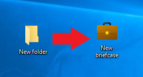
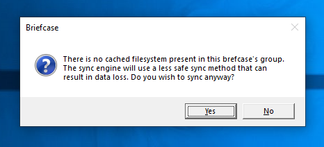
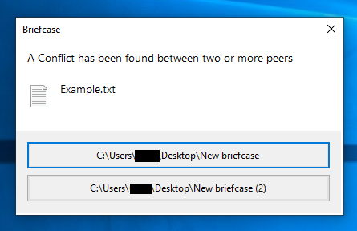

ReBriefcase
What is ReBriefcase?
ReBriefcase is a small tool that lives in your context menu. What it does is recreate the briefcases that could be found on Windows 7.
How to use ReBriefcase

The way ReBriefcase works is it turns folders into briefcases. These "briefcases" however, are still folders, they just have metadata and an icon embedded. This lets you use ReBriefcase briefcases fairly similarly to Windows briefcases.
The sync engine
ReBriefcase has two sync engines. "Safe" and "Unsafe"

Conflict detection

The ReBriefcase conflict detection window differs greatly compared to the Windows briefcase conflict detection window. The goal was to make it easier to use quickly, and to make it more intuitive for causual users.
Project News
Known Bugs
ReBriefcase is still considered "Beta" software. While obvious bugs have been sorted out, it is still possible that data can be lost. KrForge is not responsible if valuable data has been lost to ReBriefcase.
KrForge 2026